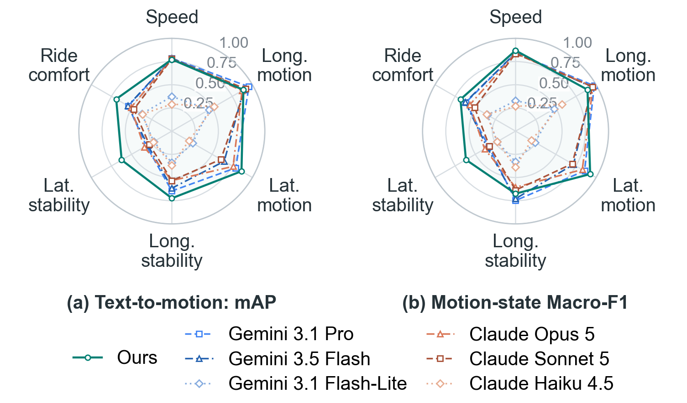

Ontology-Grounded Retrieval from IMU and CAN Signals for Scenario Mining and Motion Classification
Vehicle sensors record how a car moved; engineers describe the motion they look for in words. We align the two with an ontology that defines the states a description can name, the rules that label them in the signals, and the pairs a contrastive model should treat as positive.
Sensors in modern vehicles produce a constant stream of data. Inertial measurement unit (IMU) and controller area network (CAN) signals encode vehicle motion and dynamic response, but identifying specific motions in the signals requires vehicle-dynamics expertise and remains labor-intensive at scale. To close the gap between raw signals and descriptions of vehicle motion, we propose an ontology-grounded framework with three components: motion–language dataset construction, motion–language alignment, and bidirectional retrieval. The framework uses only IMU and CAN signals at inference. The Vehicle Motion Ontology defines vehicle motion states and the relations among the states and serves as the common basis for all three components. Dataset construction labels sensor clips with vehicle-dynamics rules and pairs each clip with every description consistent with the labeled states. The resulting dataset trains a motion encoder and a sentence encoder in a shared embedding space, with the ontology identifying multiple positives and opposite-state hard negatives. Once trained, the encoders retrieve in both directions for text-based scenario mining and motion classification, and the ontology grades retrieval relevance. On real driving data, ontology-based multi-positive training improved Text-to-Motion mAP from 63.03% to 69.47% and Motion-to-Text Recall@1 from 47.47% to 53.91% over single-positive training, and the framework outperformed six zero-shot Gemini and Claude baselines on all four overall retrieval metrics.
A clip is a 2-second window of twelve IMU and CAN channels sampled at 50 Hz, with an observation mask for missing entries. Its state labels cover the six ontology categories; a category may stay undetermined when the signals needed to assess it are missing. A description names the states of all or some categories. Two encoders map clips and descriptions to L2-normalized 256-dimensional embeddings, and cosine similarity ranks retrieval results in both directions.
28 states in six categories on three levels, with partial and opposite relations.
Vehicle-dynamics rules label clips; verified descriptions are paired by state agreement.
Motion and sentence encoders trained with ontology-based multi-positive contrastive loss.
Text-to-Motion for scenario mining; Motion-to-Text for motion classification.
Kinematic states describe how fast the vehicle moves, accelerates and turns; dynamic states describe wheel slip and the response to steering; the semantic level interprets vertical vibration as ride comfort. Partial relations connect adjacent grades and same-direction turns and give graded relevance in evaluation. Opposite relations select hard negatives during training and zero the relevance of a result.
| Level | Category | States | Partial relations | Opposite relations |
|---|---|---|---|---|
| Level 1 · Kinematic | Speed | standstillvery lowlowmediumhighvery highextreme | adjacent grades | none |
| Longitudinal motion | hard decelerationdecelerationcruisingaccelerationhard acceleration | adjacent states | acceleration vs deceleration, incl. hard variants | |
| Lateral motion | right turnsharp righthigh-lateral-acc. rightstraightleft turnsharp lefthigh-lateral-acc. left | any two turns in the same direction | any left turn vs any right turn | |
| Level 2 · Dynamic | Longitudinal stability | no sliptraction slipbraking slip | none | traction slip vs braking slip |
| Lateral stability | understeerneutral steeroversteer | none | understeer vs oversteer | |
| Level 3 · Semantic | Ride comfort | comfortableslightly uncomfortableuncomfortable | adjacent states | none |
Table I of the paper.
Vehicle-dynamics-based labeling. Category-specific thresholds with 15% hysteresis, duration requirements and signal-validity conditions decide where each state appears. Speed grades split at 1.8, 20, 40, 60, 100 and 150 km/h; longitudinal motion uses the rate of change of speed with boundaries of 0.15 and 1.4 m/s²; lateral motion uses curvature (0.003 and 0.08 rad/m) and lateral acceleration (0.4 g). Longitudinal stability thresholds the wheel slip ratio against a position- and sideslip-corrected reference speed; lateral stability thresholds the signed understeer angle at ±0.45°; ride comfort applies the ISO 2631-1 vertical weighting and a 10-second running RMS with boundaries of 0.315 and 0.63 m/s². Labeling may use high-precision reference instrumentation; inference never does.
Clip labels. Recordings are cut into non-overlapping 2-second clips. Each category is labeled independently, so an undetermined category never invalidates the others. A state is assigned when it covers at least 80% of the clip; longitudinal stability instead records a single slip type that lasts at least 0.2 s.
Description generation and verification. From 21,519 category–state specifications, a generator LLM writes seven candidate sentences each. A sentence is accepted only when three independent verifier LLMs all recover the specified states from it. Specifications left short fall back to rule-based templates. The shared pool holds 76,212 verified LLM sentences and 14,815 template sentences.
Clip–sentence pairs. A sentence is linked to a clip when every state it describes agrees with the clip's labels. A clip accelerating through a left turn therefore matches descriptions of both states and of acceleration alone, and each description matches many clips: the correspondence is many-to-many.
accelerates while turning left
the vehicle picks up speed
decelerates while turning left
Pairs for a clip labeled acceleration and left turn.
Encoders. The motion encoder concatenates the sensor values and the observation mask, applies a strided convolution (128 channels, kernel and stride 5), adds learnable positional embeddings, and runs a four-layer Transformer (four heads, feed-forward 512, dropout 0.1). Mean pooling, LayerNorm and a projection give 256 dimensions. The sentence encoder is BGE-large-en-v1.5 with token mean pooling and a projection to 256 dimensions; its backbone is fine-tuned jointly.
Training sentences. Each batch holds 256 clips. For each clip one positive sentence is sampled uniformly over the number of described categories, the categories, and the matching sentences, plus one opposite-state hard negative where the ontology offers one. All selected sentences become the batch candidates, and every clip is compared with every sentence.
Ontology-based multi-positive learning. Every clip–sentence pair in the batch is checked against the state-agreement criterion, so a pair that happens to match is a positive rather than a false negative. Pairs whose agreement cannot be decided because a clip label is undetermined leave the candidate set. With the scaled cosine similarity of clip and sentence , and the positive sets, and , the decidable candidates:
The Text-to-Motion term mirrors it over sentences with at least one positive clip, and the loss is the mean of the two directions. A sentence without a positive clip in the batch is no anchor but stays a negative candidate wherever the pair is decidable.
Text-to-Motion encodes a query once and ranks every clip by cosine similarity to its precomputed motion embedding, collecting intervals for scenario mining. Motion-to-Text encodes a clip and ranks the 5,670 complete-combination descriptions against precomputed sentence embeddings; the six states attached to the top-ranked description classify the clip without a separate classifier. Both directions run in the browser on the demo page below with the trained weights.
The demo page loads the exported fp16 sentence encoder (669 MB, fetched once and cached by the browser) and the stored 256-dimensional motion embeddings of every test clip.
The first search downloads the encoder; later searches take about 0.2 s for encoding and a few milliseconds for ranking. Vehicle identities of the proprietary circuit data are anonymized.
Text-to-Motion uses 184 queries over the 3,623 test clips; Motion-to-Text uses the 507 fully labeled test clips and 5,670 candidate descriptions. LLM baselines read the same 100×12 clip table and predict the six states zero-shot; their predictions rank candidates through the ontology relevance. Ours reports mean ± sample standard deviation over three seeds.
| Method | T2M mAP | T2M nDCG@10 | M2T R@1 | M2T R@10 |
|---|---|---|---|---|
| Gemini 3.1 Pro | 54.75 | 79.45 | 39.41 | 57.75 |
| Gemini 3.5 Flash | 49.98 | 77.23 | 28.93 | 49.81 |
| Gemini 3.1 Flash-Lite | 19.57 | 49.22 | 7.89 | 27.97 |
| Claude Opus 5 | 50.19 | 76.36 | 34.10 | 50.39 |
| Claude Sonnet 5 | 47.04 | 75.28 | 22.33 | 46.59 |
| Claude Haiku 4.5 | 17.53 | 43.50 | 3.55 | 14.12 |
| Ours | 69.48 ± 3.37 | 84.15 ± 0.38 | 53.91 ± 3.65 | 94.87 ± 0.20 |
Table III of the paper, in percent; higher is better.
With the same batch candidates, replacing single-positive training by the ontology-based multi-positive objective moved Text-to-Motion mAP from 63.03% to 69.47% and Motion-to-Text Recall@1 from 47.47% to 53.91% (Table IV of the paper).

| Component | Included material |
|---|---|
| Signal preprocessing | Signal conversion, validation, public-dataset adapters (ReV-StED, ZOD, nuScenes). |
| Vehicle-dynamics labeling | Ontology states, dynamics rules with thresholds, 2-second clip labels. |
| Description generation | Generation and verification prompts; LLM comparison prompts and schemas. |
| Alignment | Motion and sentence encoders, pair construction, multi-positive loss, training. |
| Retrieval and evaluation | Both retrieval directions, candidate pools, ontology relevance, metrics. |
| Browser demo | ONNX export of the sentence tower, stored embeddings, this page. |
Tests run on synthetic fixtures and do not reproduce trained results. No code license has been selected yet; external datasets keep their original terms.
ReV-StED, ZOD, nuScenes and production-vehicle data recorded at Inje Speedium: 1,084 continuous segments, 789.58 minutes, 22,882 non-overlapping 2-second clips split by 125 driving groups into 15,670 / 3,589 / 3,623 train / validation / test clips. Circuit vehicles are anonymized in every artifact on this page.
@inproceedings{anonymous2027aligning,
title = {Aligning Vehicle Motion with Language: Ontology-Grounded
Retrieval from IMU and CAN Signals for Scenario Mining
and Motion Classification},
author = {Anonymous},
booktitle = {Under review},
year = {2027}
}
{kind=link}
{kind=link}
{kind=link}